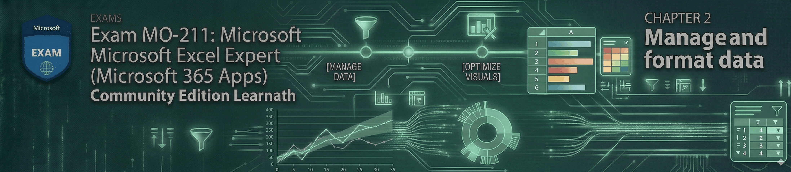
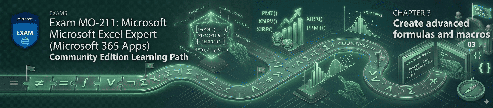
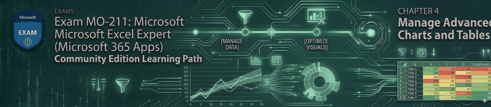

Prep shouldn't be paywalled
Most MO-211 prep is locked behind expensive subscriptions. Every lesson, dataset, and exercise here is free and open source — forever.
A hands-on, scenario-based bootcamp that walks you through every skill measured on Exam MO-211 so you can earn the Microsoft Office Specialist: Excel Expert certification with confidence.

Mapped 1:1 to Microsoft's official Skills Measured outline
No fluff, no upsells, no email walls — just a complete, practical path from "I know some formulas" to passing the Excel Expert exam.
Most MO-211 prep is locked behind expensive subscriptions. Every lesson, dataset, and exercise here is free and open source — forever.
Forget passive video lectures. You get realistic worksheets, step-by-step instructions, and solution files so the muscle memory actually sticks.
Every lesson aligns to Microsoft's Skills Measured document for MO-211 — nothing extra, nothing missing, weighted exactly as the exam is.
Found a typo? Have a better example? Open an issue or a pull request — improvements get folded back in for the next learner.
Sixteen focus areas pulled directly from the MO-211 Skills Measured outline — practiced on real worksheets, not toy examples.
Each module is weighted to match the official exam blueprint, so your time goes where the points are.
Copy macros across workbooks, reference external data, version history, multi-layer protection, calculation tuning, and Document Inspector / Accessibility / Compatibility checks.
Open module
Flash Fill, RANDARRAY, custom number formats, data validation, subtotals, conditional formatting, Excel Tables & structured references, and Advanced Filter.
Open module
IFS, SWITCH, LET, XLOOKUP, dynamic arrays, financial functions, Data Tables, Forecast Sheet, formula auditing, macros & the Personal Macro Workbook.
Open module
Box & Whisker, Waterfall, Pareto, Funnel, Sunburst, sparklines, and trendlines. PivotTables, slicers, timelines, calculated fields, GETPIVOTDATA, and PivotCharts.
Open moduleGrab the entire course from GitHub. No accounts, no email walls — the whole thing fits in a single folder on your machine.
Each lesson includes plain-English instructions, a starter workbook, and the exact concepts the exam tests for that topic.
Build the solution yourself, then compare against the included answer file. Repeat until the pattern is automatic.
I've spent years working with Excel as my daily driver — building financial models, wrangling messy data, and automating tedious bits with formulas and macros. While prepping for the MO-211 exam I found that solid, end-to-end material was either scattered across blog posts or locked behind paid courses.
So I wrote the course I wished I'd had: structured around the official Skills Measured outline, full of realistic scenarios, and free for anyone who wants to level up.
If a single lesson here saves you a few hours of confusion, the project has done its job.
Still have questions? Open an issue on GitHub and I'll get back to you.
There's no catch. The entire course — every lesson, every starter workbook, every solution file — is published openly under the MIT license. No upsells, no email gates, no "premium tier" hidden behind the next click.
No. You should be comfortable with basic formulas (SUM, AVERAGE, IF) and navigating the ribbon. Everything beyond that — XLOOKUP, dynamic arrays, PivotTables, macros — is taught from the ground up.
Most learners finish in 3–6 weeks at a comfortable pace of one lesson per evening. You can move faster or slower; the course doesn't expire and there's no "cohort" to keep up with.
Yes — that's exactly what it's built for. Every lesson maps to a skill on Microsoft's official MO-211 Skills Measured outline, weighted to match how the exam scores each domain.
Absolutely. Open an issue for typos, broken links, or fuzzy explanations, or send a pull request with a fix. Contributions are warmly welcomed.
Microsoft 365 / Excel 2021 or newer is recommended, since several lessons use modern functions like XLOOKUP, LET, FILTER, and SORTBY that aren't available in older versions.
Open Module 1 and have your first lesson done before your coffee gets cold.